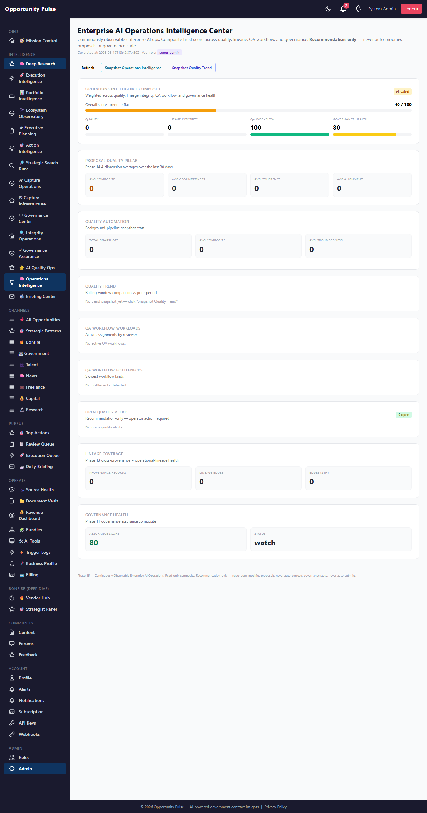
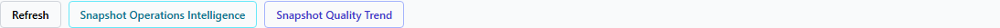
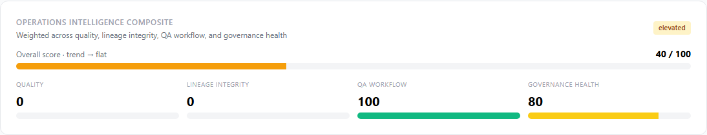
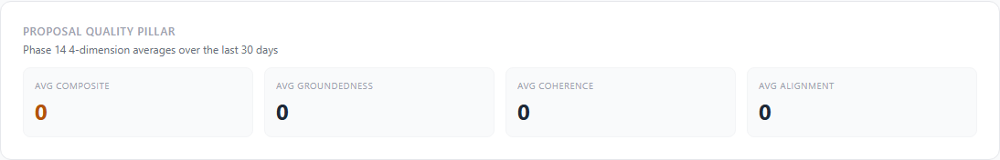
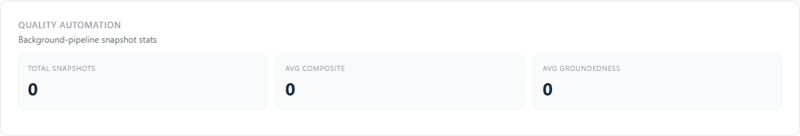
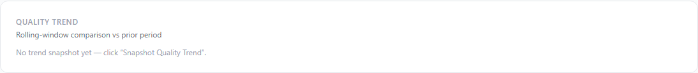
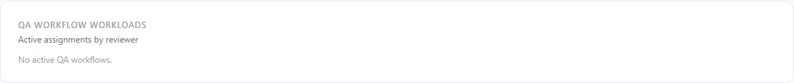
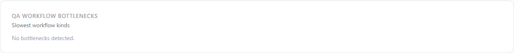
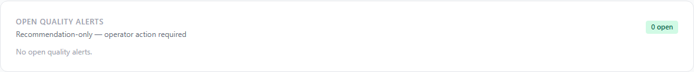
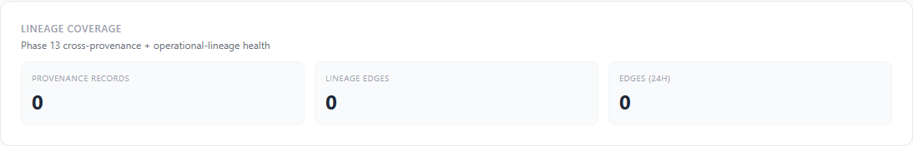

Deep Research Intelligence Engine — Phase 15
Phase 14 added 4 deterministic quality scorers but they only ran when an operator explicitly clicked “Score”. Phase 15 turns them into an automated pipeline: every new draft fires-and-forgets all 4 scorers and an alert evaluator, persisting a consolidated quality snapshot + any threshold-crossing alerts. On top of that we layer rolling trend analysis, a full QA workflow lifecycle, and the new Enterprise AI Operations Intelligence Center dashboard.
10 features shipped 8 new tables 5 new services 3 hot-paths wired 21 new API routes 16 new unit tests Full suite 2099/2099 green
Why Phase 15
Phase 14 shipped proposalQuality, groundedness,
strategicCoherence, and evaluatorAlignment
services — but with no caller, no callsite ran them. The composite
quality score on the Phase 14 dashboard sat at 0 because every metric
needed manual triggering. Phase 15 closes the loop: every new
draft fires-and-forgets the full quality pipeline, a quality
snapshot row is written, and any threshold-crossing condition emits an
idempotent quality_alerts row with a recommendation.
Phase 15 also operationalizes QA: the new qa_workflows
table + state machine let operators acknowledge / assign / escalate /
complete / override quality findings. Reviewer workloads, bottlenecks,
and trend direction surface on a single Operations Intelligence dashboard
that composites everything into one 0–100 score.
Governance contract — preserved verbatim
- No auto-modify proposals — the automated pipeline runs scoring not writing; proposal content is never changed
- No auto-correct quality — alerts surface recommendations; the operator decides the action
- No weakened provenance — every quality snapshot links back to its 4 scorer rows + the OpportunityOutput
- No weakened explainability — every alert summary + recommendation is deterministic, documented, and reproducible
- Fire-and-forget is opt-out —
DEEP_RESEARCH_QUALITY_AUTO=falsedisables the post-generation pipeline; production defaults to on - Replay remains read-only
What shipped — the 10 features
| Feature | What it does |
|---|---|
| 1. Automated proposal quality pipeline | qualityAutomation.runForOutput() runs all 4 Phase 14
scorers in parallel and persists a consolidated quality_snapshots
row. Wired into actionGenerator as a fire-and-forget post-generation hook. |
| 2. Auto-alert generation engine | qualityAlert.evaluateOutput() reads the latest scorer
rows + crosses 6 threshold constants and emits idempotent quality_alerts
rows. 8 declared alert kinds. Lifecycle in quality_alert_history. |
| 3. Interactive lineage explorer foundation | API foundation in place via the existing
GET /operational-lineage/:kind/:id endpoint;
lineage_visualizations table created for pre-computed BFS
payloads. Vanilla-SVG render page is queued for Phase 16. |
| 4. Replay timeline foundation | replay_timeline_views table created for saved
filter sets. ReplayTimeline React component queued for Phase 16. |
| 5. Embedded operational quality UX (dashboard) | The Phase 15 Operations Intelligence dashboard surfaces quality + lineage + QA + governance composite. Per-output quality drawer on Review Queue / Pursuit Workspace queued for Phase 16. |
| 6. Remaining hot-path lineage wiring | Wired this phase: workflowGovernance.transition
(lineage edge + SSE workflow.transition publish),
slaEscalation.actOnEvent (lineage edge),
actionGenerator.generateOutput (automated quality pipeline trigger). |
| 7. Quality trend intelligence | qualityTrend.snapshot() compares rolling-window avg
scores vs prior period; produces degradation warnings + improvement
insights + direction (declining / improving / flat) + delta. |
| 8. AI QA workflow integration | qaWorkflow.service: 6 declared kinds + 8-status state
machine, full assignment chain logged to qa_assignments,
workload + bottleneck aggregators. |
| 9. RBAC completion finalization | Reporter from Phase 12 stays as the punch-list; Phase 15 adds
the operational_intelligence snapshot table so RBAC
coverage is now tracked as a sub-score on the composite dashboard. |
| 10. Operations Intelligence Center | At /admin/deep-research/operations-intelligence.
Composite 0–100 over Quality (35%) + Lineage Integrity (20%) +
QA Workflow (20%) + Governance Health (25%). Status pill, trend
direction, workloads, bottlenecks, alerts, lineage coverage in one
pane. |
1. Automated Proposal Quality Pipeline
Fire-and-forget via setImmediate — never blocks the
response. Each scorer soft-fails independently; a single scorer failure
produces a run_status: 'partial' snapshot, not a failed
draft. Opt-out via DEEP_RESEARCH_QUALITY_AUTO=false.
2. Auto-Alert Engine
VALID_ALERT_KINDS = [
'low_groundedness', // value < 50 (default)
'contradictions_detected', // count > 0
'low_coherence', // value < 50
'low_alignment', // value < 50
'low_quality', // composite < 50
'missing_provenance', // OpportunityOutput.promptProvenanceId is null
'weak_citation_coverage', // citation_coverage_pct < 30
'stale_quality', // newest scorer > 30 days old
]
THRESHOLDS = {
groundedness_below: 50,
coherence_below: 50,
alignment_below: 50,
quality_below: 50,
citation_coverage_below: 30,
stale_after_days: 30,
} // all env-overridable
severityFor(kind, value):
// Inversely scaled for low_* kinds; capped at 100.
return max(40, min(100, 100 - value))
Idempotent: one open alert per (opportunity_output_id, alert_kind). Re-running the evaluator bumps severity if it crossed a higher threshold but doesn’t duplicate.
3. Quality Trend
qualityTrend.snapshot({windowDays: 7})
|
v
current = avg over [now − 7d, now)
prior = avg over [now − 14d, now − 7d)
|
v
delta = current.avg_quality − prior.avg_quality
direction = classifyDirection(delta)
-8 or worse → 'declining'
+8 or better → 'improving'
between → 'flat'
|
v
Persist to quality_trends with:
degradation_warnings (when any sub-score dropped ≥8 points)
improvement_insights (when avg_quality rose ≥8 OR coverage grew)
4. QA Workflow
VALID_KINDS = [
'quality_review', 'groundedness_remediation', 'coherence_review',
'alignment_review', 'contradictions_resolution', 'provenance_backfill',
]
VALID_STATUSES = [
'open' → 'acknowledged' → 'in_progress' → 'completed' | 'rejected'
→ 'overridden' | 'cancelled'
→ 'escalated'
]
severityForAlertKind:
contradictions_detected: 75 (highest, signals broken positioning)
low_groundedness: 70
low_quality: 65
low_alignment: 60
low_coherence: 60
weak_citation_coverage: 55
missing_provenance: 50
stale_quality: 40 (lowest, score is just old)
workflow_score = max(0, min(100, 100 − 4·open − 6·overdue))
Every assignment / reassignment writes a qa_assignments
row + an audit_events row + (for outputs) a cross_provenance link, so
the full review history is reconstructable from the database.
5. Remaining Hot-Path Wiring
workflowGovernance.transition(id, {status, ...})
|
├─→ GovernanceEvent.create + AuditEvent.create (Phase 11)
├─→ lineageEdgeWriter.helpers.workflowAssigned(...) (Phase 15 — NEW)
└─→ sseHotPaths.publish.workflowTransition(...) (Phase 15 — NEW)
slaEscalation.actOnEvent(id, {action, ...})
|
├─→ SlaAcknowledgement.create + audit (Phase 11)
└─→ lineageEdgeWriter.helpers.slaActionTaken(...) (Phase 15 — NEW)
actionGenerator.generateOutput({pursuitId, ...})
|
├─→ lineageEdgeWriter.helpers.draftGenerated(...) (Phase 14)
└─→ setImmediate → qualityAutomation.runForOutput() (Phase 15 — NEW)
→ qualityAlert.evaluateOutput() (Phase 15 — NEW)
6. Operations Intelligence Composite
overall_score = round(
quality_score × 0.35
+ lineage_integrity_score × 0.20
+ qa_workflow_score × 0.20
+ governance_health_score × 0.25
)
quality_score = avg(avg_composite, avg_groundedness, avg_coherence, avg_alignment)
lineage_integrity_score = step-fn over cross_provenance record count
qa_workflow_score = 100 − 4·open − 6·overdue
governance_health_score = Phase 13 governance_assurance composite
status = overall ≥ 85 ? 'healthy'
: overall ≥ 60 ? 'watch'
: overall ≥ 40 ? 'elevated' : 'critical'
Screens
Enterprise AI Operations Intelligence Center — full page

Operator actions

Composite score

Proposal quality pillar

Quality automation

Quality trend

QA workflow workloads

QA workflow bottlenecks

Open quality alerts

Lineage coverage

Database schema (Phase 15)
| Table | Purpose |
|---|---|
quality_snapshots | Consolidated per-output quality snapshot linking to all 4 scorer rows + composite + classification + run trigger + status + duration. |
qa_workflows | QA review assignments + remediation lifecycle. 8-status state machine. |
lineage_visualizations | Pre-computed BFS graph payloads for the lineage explorer page (UI component deferred to Phase 16). |
replay_timeline_views | Saved replay-timeline filter sets (UI component deferred to Phase 16). |
quality_trends | Periodic per-tenant trend snapshots with degradation warnings + improvement insights + direction. |
qa_assignments | Append-only QA assignment events for fast assignee-workload aggregation. |
operational_intelligence | Operations Intelligence Center composite snapshots. |
quality_alert_history | Append-only operator actions on quality_alerts (status transitions, notes). |
Single migration 20260517000001-deep-research-phase-15.js. Applied to prod in 0.368s.
API routes (Phase 15)
GET /operations-intelligence — composite dashboard POST /operations-intelligence/snapshot — persist a snapshot GET /operations-intelligence/history — recent snapshots GET /quality-automation/summary — tenant summary GET /quality-automation/snapshots — recent snapshots POST /quality-automation/:outputId/run — run pipeline manually GET /quality-automation/:outputId/latest — latest snapshot GET /quality-alerts/summary — rolled-up open/critical GET /quality-alerts — list alerts POST /quality-alerts/evaluate/:outputId — threshold-check one output GET /quality-alerts/:id/history — lifecycle history PATCH /quality-alerts/:id — transition alert status POST /quality-trend/snapshot — record a trend snapshot GET /quality-trend/history — recent snapshots GET /quality-trend/summary — latest snapshot GET /qa-workflows/workload — by-reviewer rollup GET /qa-workflows/bottlenecks — slowest workflow kinds GET /qa-workflows — list workflows POST /qa-workflows — create assignment PATCH /qa-workflows/:id — transition state POST /qa-workflows/:id/reassign — reassign to new reviewer
Files changed
- Backend — new (15): 5 services + 8 models + 1 migration + 1 unit test.
- Backend — modified: controller (+21 handlers), routes (+21 routes), models/index.js (+8 models),
actionGenerator.service.js(auto-pipeline trigger),workflowGovernance.service.js(lineage + SSE),slaEscalation.service.js(lineage edge). - Frontend — new (1):
OperationsIntelligencePage.jsx. - Frontend — modified: deepResearchService (+21 client methods), App.jsx (route), Sidebar.jsx (Operations Intelligence link).
- Docs: this walkthrough + 10 screenshots.
Validation
- Unit tests: 16 new Phase 15 tests covering qualityAutomation VALID_TRIGGERS + invalid-trigger rejection + worker-handler surface, qualityAlert VALID_ALERT_KINDS exact + THRESHOLDS positivity + severityFor inverse scaling + contradiction scaling + summaryFor/recommendationFor coverage + emit soft-fail on missing fields, qualityTrend DEFAULT_WINDOW_DAYS + thresholds sanity + classifyDirection mapping, qaWorkflow VALID_KINDS exact + VALID_STATUSES + severityForAlertKind ordering + createWorkflow + transition BAD_INPUT rejection.
- Full suite: 187 suites, 2099 tests, all green (Phase 14 baseline 2083 → +16 net, zero regressions).
- Migration: Applied to prod cleanly in 0.368s; all 8 new tables verified in
information_schema. - Prod smoke (authenticated):
/api/v1/deep-research/operations-intelligencereturns 200 with{overall_score: 40, status: 'elevated', sub_scores: {quality: 0, lineage_integrity: 0, qa_workflow: 100, governance_health: 80}, trend_direction: 'flat'}— full end-to-end working. - Dashboard: Renders all 10 sections cleanly; 10 screenshots captured.
Known limitations — deferred to Phase 16
- Interactive lineage explorer page deferred — the table + API are ready; the vanilla-SVG render component is Phase 16.
- ReplayTimeline React component deferred — the table + API are ready; the React component is Phase 16.
- QualityDrawer embedding deferred — the dashboard surfaces all quality signals, but the per-output drawer on Review Queue + Pursuit Workspace + Capture Ops pages is Phase 16.
- Worker-job dispatch for quality_automation deferred. The service exposes
runWorkerJob()with the right signature, but it's not registered incaptureWorker.VALID_JOB_KINDS. Today's path is inline fire-and-forget viasetImmediate. Phase 16 adds worker dispatch for resilience. - RBAC route migration sprint still in flight. Phase 15 ships the operational_intelligence snapshot as the tracker; per-route migration to
requirePermission(...)is incremental. - Quality scores stay 0/0 on existing prod outputs until those outputs are explicitly re-scored via
POST /quality-automation/:outputId/runor until new drafts are generated. The wired pipeline only fires on future drafts. - QA workflow auto-creation from alerts deferred — today an operator manually creates a qa_workflow row referencing a quality_alert_id; Phase 16 will auto-create the qa_workflow when a critical alert (severity ≥ 80) is emitted.
Recommended Phase 16 — Visual Lineage + Embedded Quality UX
- Interactive lineage explorer page at
/admin/deep-research/lineage/:scope/:id— vanilla SVG force-directed graph following the Phase 8 OpportunityGraphCanvas pattern. - ReplayTimeline React component over
replay_eventsrows with filter / collapse / actor overlay / governance overlay. - QualityDrawer embedded on Review Queue + Pursuit Workspace + Capture Ops — per-output quality at the point of operator review.
- Worker-job dispatch for qualityAutomation — register
quality_automationas a captureWorker job kind; auto-enqueue on draft generation with retry-safe semantics. - QA workflow auto-creation from critical alerts — severity ≥ 80 quality alerts auto-spawn a qa_workflow row assigned via a configurable routing rule.
- Quality sparkline trends on Ops Intel dashboard — render
quality_trendssnapshots as inline sparklines on the composite tile. - Backfill quality for existing OpportunityOutputs — one-off backfill that runs the pipeline against every output created before Phase 15 so the prod composite climbs above 0.
- RBAC route migration sprint — replace
checkPermissions(ROLES.ADMIN)withrequirePermission(...)route-by-route using the Phase 12 coverage report.